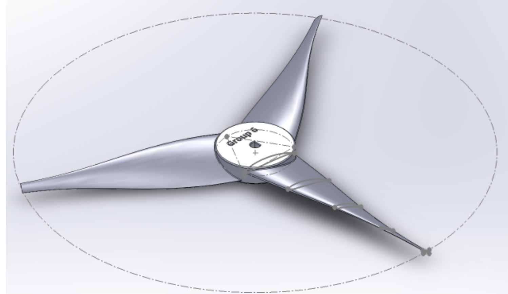

Aerodynamic and Structural Optimization of a HAWT
Challenge: Designed a horizontal-axis wind turbine to maximize power output for a target wind speed of 25 mph while minimizing weight and deflection.
Action: Selected the SG 6043 airfoil, 3-blade geometry, and twist angle of 43 degrees, balancing the lift-to-drag ratio with structural integrity. Performed Finite Element Analysis in Solidworks to refine the tower and blade design, identifying critical stress points and ensuring stiffness.
Result: The final design achieved an optimized power of 12.63 W with a stiffness of 17.7 N/mm.
Skills: Aerodynamics, HAWT Design, FEA, Structural Analysis, CAD, Solidworks